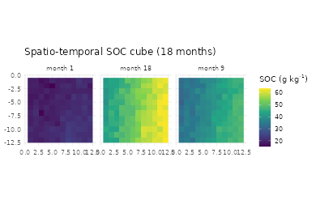
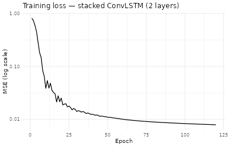
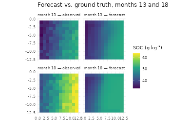

Pillar 3 — 4D Pedometry: Stacked ConvLSTM Forecasts of SOC
Hugo Rodrigues
Source:vignettes/pillar3-4d-soc.Rmd
pillar3-4d-soc.RmdAbstract
Most digital soil maps report a time-invariant property field, which
ignores the evidence that topsoil Soil Organic Carbon (SOC) responds
measurably to climate forcing on monthly to annual scales (Lehmann and Kleber
2015; Minasny et al. 2017).
The Pillar 3 of edaphos addresses that gap
with a stacked Convolutional LSTM (Shi et al. 2015) trained in
sequence-to-sequence mode plus a multi-step rollout wrapper for forward
forecasting under known future drivers. A physics-informed mass-balance
regulariser optionally penalises violations of an analytical SOC
kinetic, fusing Pillar 2 into Pillar 3 (Raissi et al. 2019; Reichstein et al. 2019).
1. From 3D to 4D pedometry
Let denote a topsoil property at location and time . Traditional DSM (McBratney et al. 2003) estimates by collapsing over time. A 4D model retains the time dimension and predicts the full spatio-temporal field , where is the driver stack (climate, vegetation, static topography).
The Convolutional LSTM cell (Shi et al. 2015)
operationalises spatial memory: at each time step the hidden state
and the cell state
are tensors of the same spatial size as the input, so memory propagates
with its location:
with * a 2-D convolution
and
the Hadamard product. Stacking
cells feeds
as the input to layer
,
yielding a hierarchy of spatial receptive fields.
2. Synthetic SOC dynamics cube
To keep the vignette self-contained and reproducible,
[temporal_synth_soc_cube()][temporal_synth_soc_cube]
integrates the driver-response kinetic
with
the monthly precipitation field and
its long-term mean. The numerator
models organic input proportional to wet-season biomass turnover; the
denominator
captures humidity-modulated decomposition (Lehmann and Kleber 2015; Minasny et al. 2017).
cube <- temporal_synth_soc_cube(H = 12L, W = 12L, T_total = 18L,
seed = 7L)
str(cube)
#> List of 3
#> $ elev : num [1:12, 1:12] 42.8 32.6 42.4 51.1 55.6 ...
#> $ precip: num [1:18, 1:12, 1:12] 16.3 28.7 53.2 71.1 87.7 ...
#> $ soc : num [1:18, 1:12, 1:12] 18.9 19.4 20.1 21.3 23.3 ...
library(ggplot2)
to_df <- function(mat, month) {
dd <- expand.grid(row = seq_len(nrow(mat)), col = seq_len(ncol(mat)))
dd$soc <- as.vector(mat); dd$month <- month
dd
}
soc_df <- rbind(to_df(cube$soc[1L, , ], "month 1"),
to_df(cube$soc[9L, , ], "month 9"),
to_df(cube$soc[18L, , ], "month 18"))
ggplot(soc_df, aes(col, -row, fill = soc)) +
geom_raster() + facet_wrap(~ month) +
scale_fill_viridis_c(name = expression("SOC ("*g~kg^{-1}*")")) +
coord_equal() + theme_minimal(base_size = 12) +
labs(x = NULL, y = NULL,
title = "Spatio-temporal SOC cube (18 months)")
3. Train / forecast split
We reserve the last six months for an out-of-sample forecast evaluation and train on the first twelve.
past_tensor <- temporal_cube_to_tensor(cube, t_slice = 1:12)
future_tensor <- temporal_cube_to_tensor(cube, t_slice = 13:18)
dim(past_tensor$sequence)
#> [1] 1 12 2 12 12
dim(past_tensor$target)
#> [1] 1 12 12 124. Stacked ConvLSTM in sequence-to-sequence mode
fit <- temporal_convlstm_fit(
sequence = past_tensor$sequence,
target = past_tensor$target,
hidden_dims = c(12L, 6L),
kernel_size = 3L,
return_sequence = TRUE,
epochs = 120L, lr = 0.02,
seed = 1L, verbose = FALSE
)
fit
#> <edaphos_temporal_convlstm>
#> input_dim = 2 hidden = [12, 6] kernel = 3
#> return_sequence = TRUE epochs = 120 final loss = 0.007865
loss_df <- data.frame(epoch = seq_along(fit$loss_history),
loss = fit$loss_history)
ggplot(loss_df, aes(epoch, loss)) +
geom_line(linewidth = 0.7) + scale_y_log10() +
theme_minimal(base_size = 12) +
labs(title = "Training loss — stacked ConvLSTM (2 layers)",
x = "Epoch", y = "MSE (log scale)")
5. Multi-step rollout forecast
When future driver channels are known (e.g. climate forecasts (Reichstein et al. 2019)), a single forward pass of the trained ConvLSTM on the concatenated past + future window returns the per-step prediction.
forecast <- temporal_convlstm_rollout(
fit,
past_sequence = past_tensor$sequence,
future_drivers = future_tensor$sequence
)
dim(forecast)
#> [1] 1 6 12 12
tgt_norm <- future_tensor$target[1L, , , ]
pred_norm <- forecast[1L, , , ]
rmse_month <- sapply(seq_len(6), function(t)
sqrt(mean((pred_norm[t, , ] - tgt_norm[t, , ])^2)))
data.frame(forecast_month = 13:18, rmse_norm = signif(rmse_month, 3))
#> forecast_month rmse_norm
#> 1 13 0.105
#> 2 14 0.115
#> 3 15 0.128
#> 4 16 0.183
#> 5 17 0.331
#> 6 18 0.543
per_pixel <- sqrt(apply((pred_norm - tgt_norm)^2, c(2, 3), mean))
summary(as.vector(per_pixel))
#> Min. 1st Qu. Median Mean 3rd Qu. Max.
#> 0.04832 0.15511 0.22278 0.25133 0.32635 0.56169
df <- rbind(
to_df(future_tensor$scaling$soc_mu +
future_tensor$scaling$soc_sd * tgt_norm[1L, , ],
"month 13 — observed"),
to_df(future_tensor$scaling$soc_mu +
future_tensor$scaling$soc_sd * pred_norm[1L, , ],
"month 13 — forecast"),
to_df(future_tensor$scaling$soc_mu +
future_tensor$scaling$soc_sd * tgt_norm[6L, , ],
"month 18 — observed"),
to_df(future_tensor$scaling$soc_mu +
future_tensor$scaling$soc_sd * pred_norm[6L, , ],
"month 18 — forecast")
)
df$month <- factor(df$month, levels = c(
"month 13 — observed", "month 13 — forecast",
"month 18 — observed", "month 18 — forecast"))
ggplot(df, aes(col, -row, fill = soc)) +
geom_raster() + facet_wrap(~ month, nrow = 2) +
scale_fill_viridis_c(name = expression("SOC ("*g~kg^{-1}*")")) +
coord_equal() + theme_minimal(base_size = 12) +
labs(x = NULL, y = NULL,
title = "Forecast vs. ground truth, months 13 and 18")
6. Physics-informed ConvLSTM
For Pillars 2 × 3 fusion, a mass-balance prior of the form (2) can be
injected into the loss as a soft constraint (Raissi et al. 2019; Karniadakis et al. 2021; Willard et al. 2022):
In
[temporal_convlstm_fit()][temporal_convlstm_fit] this is
enabled by setting physics_lambda > 0. Two auxiliary
traces — loss_fit_history and
loss_phys_history — are stored so the data and physics
contributions can be monitored independently during training.
7. Discussion
Pillar 3 establishes the scaffold for a genuinely 4-D DSM pipeline — distinct from repeated 3-D snapshots — and connects it back to Pillar 2 through the shared kinetic (2). Production-scale use cases require real spatio-temporal stacks (MODIS, ERA5, MapBiomas), multi-step autoregressive rollout, and hysteresis regularisers; those are scheduled for future releases.